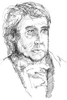

G.W.F. Hegel (1770-1831), Almanya, Stuttgart’ta doğdu. Hegel, sonraları Almanya’nın felsefe merkezi olan Jena Üniversitesi’nde akademik bir iş bulmayı umdu, ama planları Napolyon Bonaparte’ın istilası ile yarıda kaldı. Hegel, kaçtı ve önce Heidelberg ve sonrasında Berlin’de bir profesör olmadan evvel birçok iş arasında, bir gazete editörü ve lise müdürü olarak yıllarca çalıştı. Öldüğünde Hegel, derslerini dinlemek için sınıflara doluşan öğrencileriyle Almanya’nın en ünlü filozofuydu.

Hegel’in felsefî sistemi, insanı hayrette bırakacak denli karmaşıktır. Ancak, birkaç genel özellikten söz edilebilir.
İlk olarak Hegel, tarihe büyük önem verir. Hegel için tarih, ruhun (Almanca’da geist) kendisinin ruh olarak bilincine varma noktasına gelmesi sürecidir. Bununla Hegel’in ne demek istediğini anlatmak zordur. Bir okumada ruh, insanoğlunun yaşadığı normların toplamıdır. Bir norm, neyi yapmamız gerektiğini veya neyi yapmamıza izin verildiğini (toplumsal kaideler) söyleyen bir kuraldır. “Ruh, kendisinin ruh olarak bilinicine varma noktasına gelir.” demek, tarihsel süreçler boyunca insanların kendilerinin yaşamlarını yöneten normların yazarları olduklarının, tarih boyunca bu normların belirli nedenlerle çıktığının, sadeleştirildiğinin ve değiştirildiğinin toplu olarak farkına varmaları demektir.
Hegel’in, kendisinin ‘bilinç formları’ dediği normlar sistemlerinin tarih boyunca nasıl değiştiği hakkında çok ilginç bir kuramı vardı. Kendi kuyularını kendilerinin kazdıklarını iddia etti. Normların bir sistemi, kendi standartlarına göre gerekçesiz ve saçma gelmeye başladığında kendisinin kuyusunu kazar. Hegel, bu olduğu zaman, bilinçliliğin önceki formunun sorunlarını kesin olarak çözen normların yeni bir sistemi yükselir, diyordu. Böylece, tarih boyunca insan yaşamını yöneten normların sistemlerini sınadığımızda – siyasi, ahlâkî, dinî, estetik veya felsefî – bir formdan diğerine geçişin mantıklı görünmesi doğrultusunda ‘bilinç formları’nın birbirini takip ettiğini fark ederiz. Bu nedenle dünyamızı incelediğimizde, normlarımızın akıl ile yönetilen tarihî bir sürecin ürünleri olduğunu görürüz.
EK BİLGİLER:
1. Hegel, kendi felsefî sisteminin son bilinç formu, hiçbir zaman aşılamayacak normların son sistemi olduğuna inandı. Bu yüzden onun anladığı şekliyle “tarih”in sona erdiğine inandı.
2. Hegel, bilinç formlarının kendi kuyularını kendilerinin kazmasıyla bilincin yeni formlarına yol açması sürecine “diyalektik” adını verdi.
3. Hegel, bir zamanlar Napolyon Bonaparte’ı “at sırtındaki dünya tarihi” olarak tasvir etti.